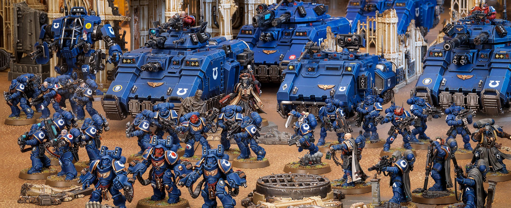

Warhammer 40k: or how I Learned to Stop Worrying and Love the WAAAGH!

Warhammer 40k is very dumb. Warhammer is so outrageously, insanely, apocalyptically, earth-shatteringly, face-meltingly dumb and I love it so much that
I must write my own dumb little essay about it.
So what is Warhammer 40k? Warhammer 40k is a miniature tabletop wargame developed by Games Workshop that started in the 1980’s.
Essentially it’s like Chess but with its own flair of collectable figurines. Since the 80’s the franchise has branched out into dozens of video games, comics, short
films, and over 350 books. That wasn’t a typo. There are over 350 books written about this universe.
If this is your first time hearing about it, I’m honestly not surprised. This hobby far bigger than most people give it credit for, and despite that
it’s understandable why many find it to be off putting when they first encounter it.